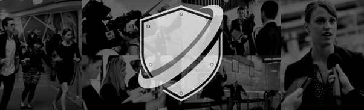

I. GIỚI THIỆU
Trust Rebuild Việt Nam là đơn vị chuyên tư vấn và triển khai các giải pháp xử lý khủng hoảng truyền thông, xây dựng chiến lược phòng ngừa, và phục hồi niềm tin thương hiệu trong môi trường truyền thông số đầy biến động. Chúng tôi hỗ trợ doanh nghiệp, tổ chức và cá nhân đối mặt và vượt qua khủng hoảng dựa trên ba yếu tố cốt lõi: xử lý nhanh – phản ứng chuẩn – truyền thông vững. Với đội ngũ giàu kinh nghiệm, kết hợp chuyên môn đa ngành gồm truyền thông, pháp lý, tâm lý học xã hội và công nghệ dữ liệu, Trust Rebuild Việt Nam cung cấp các giải pháp không chỉ dập tắt “ngọn lửa” khủng hoảng, mà còn tái cấu trúc hình ảnh thương hiệu để phát triển bền vững trong tương lai.
Giá trị cốt lõi:
- Tốc độ – Chính xác – Đạo đức truyền thông
- Phối hợp đa kênh – Phản ứng đa tầng – Xử lý đa chiều
- Bảo vệ uy tín – Tái thiết niềm tin – Gắn kết công chúng
“Khủng hoảng không chỉ là thách thức, mà còn là cơ hội để thương hiệu thể hiện trách nhiệm và bản lĩnh.” — Trust Rebuild Việt Nam, lấy cảm hứng từ học thuyết SCCT (Situational Crisis Communication Theory) của Tiến sĩ Timothy Coombs, nhấn mạnh tầm quan trọng của phản ứng truyền thông dựa trên mức độ trách nhiệm cảm nhận được từ công chúng.
Chúng tôi đã đồng hành cùng nhiều thương hiệu lớn tại Việt Nam, các cá nhân có tầm ảnh hưởng, tổ chức giáo dục và doanh nghiệp khởi nghiệp trong việc xử lý khủng hoảng từ bê bối cá nhân, sự cố sản phẩm, tấn công mạng xã hội, đến khủng hoảng nội bộ lộ lọt thông tin. Từ các scandal tưởng chừng không thể cứu vãn, Trust Rebuild Việt Nam đã giúp khách hàng khôi phục uy tín, ổn định truyền thông, và vượt qua khủng hoảng với danh tiếng mạnh mẽ hơn.
II. DỰ ÁN THỰC TẾ
Phần này trình bày phân tích sâu về các sự kiện khủng hoảng thực tế tại Việt Nam, dựa trên thông tin công khai từ các nguồn đáng tin cậy. Chúng tôi tập trung vào sai lầm ban đầu, hành động xử lý, kết quả và bài học rút ra, nhằm minh họa cách áp dụng các chiến lược khủng hoảng hiệu quả. Các phân tích này không đại diện cho dự án trực tiếp của Trust Rebuild Việt Nam mà là ví dụ học thuật để khách hàng học hỏi.
1. Pepsi Việt Nam và bài học về minh bạch thông tin (2003)
-
Bối cảnh: Năm 2003, Pepsi Việt Nam triển khai chương trình khuyến mãi “Uống Pepsi trúng SH”, nhưng hai khách hàng phản ánh rằng họ trúng thưởng nhưng không được nhận quà, gây ra làn sóng phẫn nộ trong cộng đồng người tiêu dùng.
-
Vấn đề phát sinh:
- Thiếu minh bạch trong cơ chế đổi quà, dẫn đến nghi ngờ về tính công bằng của chương trình.
- Phản hồi truyền thông chậm trễ, khiến tin đồn lan rộng trên các phương tiện truyền thông và cộng đồng.
- Cơ quan chức năng vào cuộc, đưa ra cảnh báo, làm gia tăng áp lực lên thương hiệu.
-
Chiến lược xử lý khủng hoảng:
- Thành lập tổ công tác khẩn cấp để phân tích toàn bộ quá trình thực hiện chương trình khuyến mãi.
- Tổ chức họp báo công khai, tại đó đại diện Pepsi chính thức xin lỗi và nhận trách nhiệm về những thiếu sót.
- Cập nhật rõ ràng quy trình nhận giải thưởng trên mọi nền tảng truyền thông, đảm bảo thông tin dễ tiếp cận.
- Hoàn tiền và cung cấp phần quà bổ sung cho các khách hàng bị ảnh hưởng, thể hiện thiện chí khắc phục.
-
Kết quả: Nhờ phản ứng có trách nhiệm và tuân thủ đúng quy định pháp luật, Pepsi Việt Nam đã duy trì được lòng tin của người tiêu dùng, giảm thiểu thiệt hại về danh tiếng.
-
Khung lý thuyết áp dụng: Trường hợp này được phân tích dựa trên Lý thuyết Truyền thông Khủng hoảng Tình huống (Situational Crisis Communication Theory – SCCT) của W. Timothy Coombs. SCCT nhấn mạnh việc lựa chọn chiến lược phản hồi dựa trên mức độ trách nhiệm của tổ chức trong khủng hoảng. Trong trường hợp này, Pepsi chịu trách nhiệm trung bình do lỗi vận hành chương trình khuyến mãi, vì vậy cần áp dụng chiến lược giảm nhẹ trách nhiệm (giải thích và khắc phục) kết hợp với chiến lược tái xây dựng (xin lỗi và bồi thường). Việc tổ chức họp báo và bồi thường kịp thời phù hợp với khuyến nghị của SCCT, giúp khôi phục lòng tin. Tuy nhiên, sự chậm trễ ban đầu trong phản hồi không hoàn toàn tuân thủ nguyên tắc phản ứng nhanh của lý thuyết.
-
Bài học và khuyến nghị: Minh bạch và phản hồi kịp thời là yếu tố then chốt trong quản lý khủng hoảng khuyến mãi, như Melissa Agnes nhấn mạnh: “Khủng hoảng truyền thông không thể tránh, nhưng minh bạch thông tin là cách để doanh nghiệp trụ vững.” Việc áp dụng SCCT yêu cầu lập kế hoạch truyền thông trước, bao gồm quy trình kiểm tra chương trình khuyến mãi và kênh phản hồi nhanh để ngăn chặn tin đồn.

2. SKIN1004 Vietnam – Khủng hoảng copy design sự kiện (2024)
-
Bối cảnh: Vào ngày 18–19/5/2024, SKIN1004 tổ chức sự kiện quảng bá sản phẩm “3 Hệ Chống Nắng Toàn Năng” tại Vạn Hạnh Mall, TP.HCM. Một cá nhân (tự xưng là “Insight mất lòng”) tố cáo thương hiệu sử dụng thiết kế của họ mà không thỏa thuận hoặc trả phí đúng mức, gây tranh cãi trên mạng xã hội Facebook và TikTok.
-
Vấn đề phát sinh:
- Bài viết tố cáo lan truyền nhanh chóng, thu hút hơn 9.000 tương tác, khiến công chúng cho rằng SKIN1004 thiếu minh bạch trong việc tôn trọng quyền sở hữu trí tuệ.
- Dư luận chỉ trích thương hiệu “đạo nhái thiết kế”, gây ảnh hưởng nghiêm trọng đến uy tín và hình ảnh lâu dài trên các nền tảng mạng xã hội.
-
Chiến lược xử lý khủng hoảng:
- Sau hai ngày, trang Facebook chính thức của SKIN1004 đăng bài phản hồi chi tiết, giải thích toàn bộ quá trình sáng tạo từ ý tưởng đến thực hiện, nhằm minh bạch hóa sự việc.
- Bài viết cung cấp bằng chứng về việc thương hiệu đã làm việc minh bạch, có kiểm duyệt pháp lý từ luật sư, giúp làm rõ hiểu lầm và thay đổi nhận thức của công chúng.
-
Kết quả:Bài giải thích chi tiết đã làm giảm chỉ trích từ cộng đồng mạng. SKIN1004 được đánh giá xử lý khủng hoảng “chậm mà chắc”, tránh làm bùng phát thêm tranh cãi nhờ phản hồi được chuẩn bị kỹ lưỡng và rõ ràng.
-
Khung lý thuyết áp dụng: Trường hợp này dựa trên Mô hình Truyền thông Hai chiều Đối xứngcủa James E. Grunig, nhấn mạnh giao tiếp minh bạch và đối thoại hai chiều để xây dựng lòng tin. Phản hồi chi tiết của SKIN1004, kèm bằng chứng pháp lý, phù hợp với mô hình này, giúp làm rõ sự việc và khôi phục niềm tin. Tuy nhiên, thời gian phản hồi kéo dài hai ngày có thể không đáp ứng đủ yêu cầu về tốc độ trong khủng hoảng mạng xã hội, vốn đòi hỏi phản ứng nhanh hơn theo khuyến nghị của Grunig.
-
Bài học và khuyến nghị: Trong khủng hoảng liên quan đến quyền sở hữu trí tuệ, phản hồi minh bạch với bằng chứng cụ thể, như mô hình của Grunig đề xuất, là yếu tố then chốt. Thương hiệu nên thiết lập kênh giám sát mạng xã hội để phát hiện và phản ứng sớm hơn, đồng thời hợp tác với các bên liên quan (như cá nhân tố cáo) để giải quyết tranh cãi một cách xây dựng. Minh bạch và giao tiếp hai chiều giúp giảm thiểu tổn thất danh tiếng.
3. Vinasoy và lô sữa Fami Canxi bị thu hồi tại Nhật Bản (2023)
-
Bối cảnh: Ngày 28/3/2023, cơ quan chức năng tại thành phố Chiba, Nhật Bản, yêu cầu thu hồi 25 thùng sữa đậu nành Fami Canxi của Vinasoy do nghi ngờ nhiễm vi khuẩn Coliform trong quá trình vận chuyển từ Việt Nam.
-
Vấn đề phát sinh:
- Truyền thông Nhật Bản và mạng xã hội Việt Nam lan truyền thông tin sai lệch rằng “sữa Fami gây ung thư” hoặc nhiễm khuẩn nghiêm trọng, dù không có bản kiểm định xác thực.
- Tin đồn gây hoang mang cho người tiêu dùng trong và ngoài nước, đe dọa uy tín thương hiệu.
-
Chiến lược xử lý khủng hoảng:
- Vinasoy nhanh chóng gửi mẫu lưu đối chứng đến Viện Kiểm nghiệm An toàn Vệ sinh Thực phẩm Quốc gia (NIFC) tại Việt Nam để kiểm định độc lập, đồng thời hợp tác với đơn vị giám định tại Nhật Bản.
- Khi nhận kết quả âm tính với Coliform (ngày 3/4/2023), công ty công bố thông cáo chính thức, giải thích rằng sự cố là do tái nhiễm trong quá trình vận chuyển, không phải lỗi sản xuất.
- Công ty liên tục cập nhật tình hình, phản bác thông tin sai lệch trên mạng xã hội và kêu gọi công chúng chỉ tin vào dữ liệu kiểm định chính thức.
-
Kết quả:Nhờ phản hồi minh bạch dựa trên dữ liệu khoa học, khủng hoảng được kiểm soát nhanh chóng. Vinasoy duy trì uy tín nhờ quy trình sản xuất đạt chuẩn quốc tế (FSSC 22000, HACCP, tiệt trùng UHT) và tiếp tục được người tiêu dùng tin tưởng, đặc biệt tại thị trường Nhật Bản, nơi sản phẩm được phân phối tại 80 siêu thị Don Quijote.
-
Khung lý thuyết áp dụng: Trường hợp này được phân tích dựa trên Mô hình Truyền thông Khủng hoảngcủa Kathleen Fearn-Banks, nhấn mạnh việc lập kế hoạch chủ động và phản hồi dựa trên dữ liệu để giải quyết khủng hoảng. Phản ứng nhanh chóng của Vinasoy, bao gồm kiểm định độc lập và thông cáo minh bạch, phù hợp với giai đoạn phản hồicủa mô hình, giúp xoa dịu lo ngại của công chúng. Hợp tác với cơ quan chức năng và truyền thông dữ liệu khoa học cũng đáp ứng khuyến nghị của Fearn-Banks về quản lý khủng hoảng hiệu quả.
-
Bài học và khuyến nghị:Trong khủng hoảng liên quan đến an toàn sản phẩm, phản hồi nhanh chóng với bằng chứng khoa học và hợp tác với cơ quan chức năng, như Fearn-Banks đề xuất, là yếu tố then chốt để kiểm soát tin đồn. Doanh nghiệp nên duy trì hệ thống giám sát chuỗi cung ứng và kế hoạch truyền thông khủng hoảng trước để phản ứng tức thời. Fearn-Banks nhấn mạnh: “Lập kế hoạch ứng phó khủng hoảng trước là yếu tố quyết định thành bại.”
III. DỊCH VỤ
| Dịch vụ | Mô tả Chi Tiết |
|---|---|
| Tư vấn & xử lý khủng hoảng truyền thông cấp tốc | Khi khủng hoảng xảy ra, từng phút trôi qua đều có thể khiến danh tiếng doanh nghiệp sụp đổ. Trust Rebuild cung cấp giải pháp can thiệp tức thời, xác định mức độ rủi ro, xây dựng thông điệp phản hồi chiến lược và hỗ trợ xử lý tình huống khẩn cấp 24/7. Chúng tôi đồng hành cùng doanh nghiệp từ khi bùng phát đến khi kiểm soát hoàn toàn. |
| Đào tạo & xây dựng quy trình phòng ngừa khủng hoảng | Phòng hơn chống. Chúng tôi thiết kế các khóa đào tạo nội bộ và kịch bản thực chiến giúp đội ngũ quản lý và truyền thông chủ động ứng phó trước mọi tình huống rủi ro. Đồng thời, Trust Rebuild hỗ trợ xây dựng hệ thống quy trình phòng ngừa khủng hoảng bài bản – có thể kích hoạt ngay khi cần. |
| Truyền thông hậu khủng hoảng: phục hồi danh tiếng & truyền thông bền vững | Sau khủng hoảng, doanh nghiệp cần nhiều hơn một lời xin lỗi. Chúng tôi hỗ trợ đánh giá hậu quả, tái định vị hình ảnh, xây dựng kế hoạch truyền thông dài hạn nhằm tái thiết niềm tin từ công chúng, đối tác và khách hàng. |
| Quản lý truyền thông mạng xã hội mùa khủng hoảng | Giữa thời đại mạng xã hội bùng nổ, một bình luận tiêu cực có thể lan truyền khắp nơi chỉ trong vài phút. Trust Rebuild giúp doanh nghiệp giám sát, kiểm soát và phản ứng linh hoạt trên các nền tảng số (Facebook, TikTok, YouTube, v.v.) với công cụ phân tích và đội ngũ vận hành dày dạn kinh nghiệm. |
| Hỗ trợ truyền thông đa kênh: báo chí, KOLs, nội bộ | Chúng tôi sở hữu mạng lưới quan hệ báo chí, KOLs, chuyên gia truyền thông và cố vấn pháp lý để hỗ trợ doanh nghiệp truyền tải thông điệp một cách chính xác, đúng kênh, đúng thời điểm. Đồng thời, chúng tôi triển khai chiến lược truyền thông nội bộ giúp ổn định tâm lý nhân viên và bảo vệ năng suất tổ chức. |
IV. ĐỘI NGŨ CHUYÊN GIA
- Chuyên gia chính sách công và truyền thông chiến lược
- Kinh nghiệm: Giảng dạy tại Trường Chính sách Công và Môi trường, Đại học Indiana (Hoa Kỳ). Ông từng là cố vấn chính sách cấp cao tại Ngân hàng Thế giới và Chính phủ Việt Nam trong các chương trình cải cách truyền thông và minh bạch hóa thông tin. Với nền tảng học thuật vững chắc và kinh nghiệm toàn cầu, ông là tiếng nói uy tín trong việc hoạch định chiến lược truyền thông cho doanh nghiệp và tổ chức công.
- Chuyên gia truyền thông và đạo diễn – Cựu Trưởng ban sản xuất các chương trình đặc biệt, VTV
- Kinh nghiệm: Đạo diễn, nhà sản xuất kỳ cựu của Đài Truyền hình Việt Nam, người đứng sau nhiều chương trình thời sự – xã hội có tác động lớn như Việc tử tế, Cặp lá yêu thương... Anh sở hữu kinh nghiệm dày dạn trong việc xử lý các khủng hoảng truyền thông công – tư, đặc biệt là các vấn đề có yếu tố cộng đồng và hình ảnh doanh nghiệp trong khủng hoảng. Hiện anh đồng thời tham gia tư vấn chiến lược truyền thông và phát triển nội dung cho các thương hiệu lớn.
V. LIÊN HỆ
📧 Email: contact@trustrebuild.vn
☎️ Hotline:0912 345 678
🏢 Văn phòng: Tầng 6, Tòa nhà ABC, Q.1, TP.HCM
📲 Fanpage: Trust Rebuild Vietnam – Crisis Management
🌐 Website: www.trustrebuild.vn
🕒 Phản hồi trong vòng 30 phút – Tư vấn miễn phí ca đầu tiên